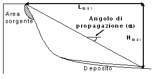

Accelerazione
Velocita' nota (m/s)
Distanza di runout nota (H/L)

Attenuatori
Pendenza versante decrescente
Percorso tortuoso (colate di detrito)
Versante opposto o deviazione>60°
Presenza di opere antropiche mitigatorie
Presenza di vegetazione od ostacoli naturali
Deposizione lungo il percorso
(o presenza di aree di deposito a monte degli elementi di rischio)
Accentuatori
Pendenza versante crescente
Fenomeno incanalato
Materiale sciolto saturo lungo il percorso
Abbondante disponibilita' di acqua
Possibile sbarramento di un corso d'acqua
Possibile generazione di tsunami
Avanti